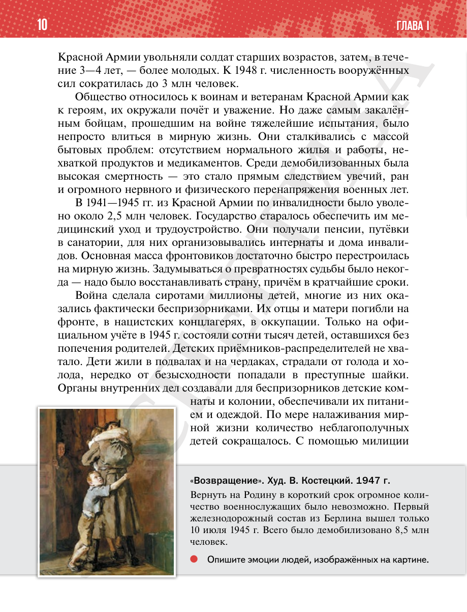

⌂
Мединский.нет
Последнее обновление: 21.08.2026
Мединский.нет
›
История России. 11 класс. Базовый уровень
›
Глава I. СССР в 1945—1991 гг.
›
§ 1. Восстановление и развитие экономики и социальной сферы
›
стр. 11

← стр. 10
Оглавление
стр. 12 →
×